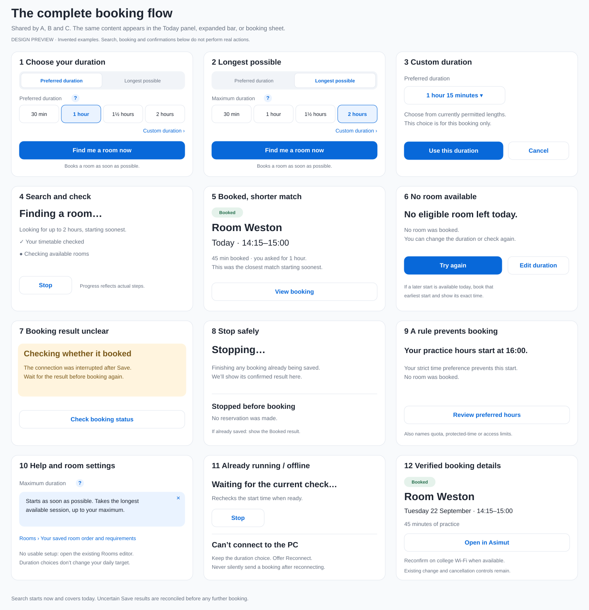

Three placements in the existing Asimut style. Every room, time and outcome shown is an invented example.
Start soonest. Choose a preferred duration, or Longest possible with a maximum such as 2 hours. Pressing the action searches and books one room.
Complete booking flow — all three options
Duration selection, help, progress, shorter matches, empty results, Stop, recovery and booking details.

Open editable flow SVG